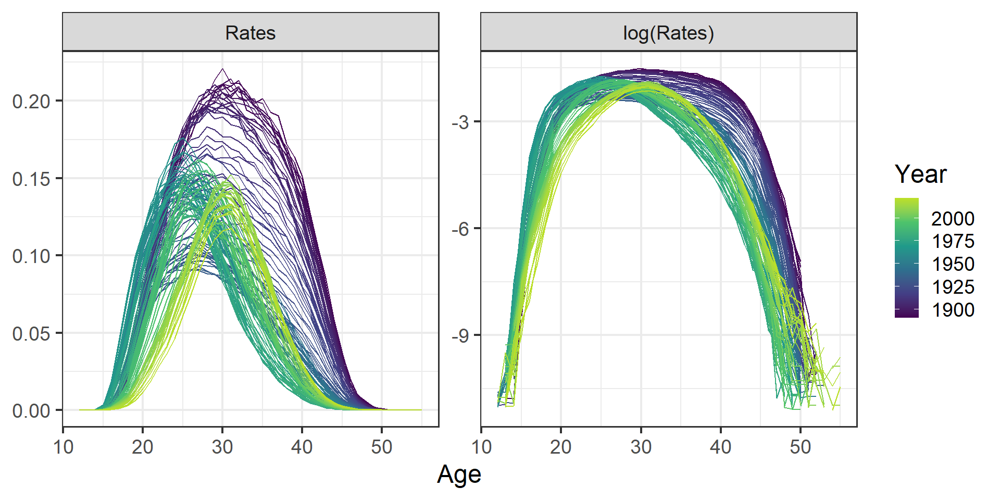
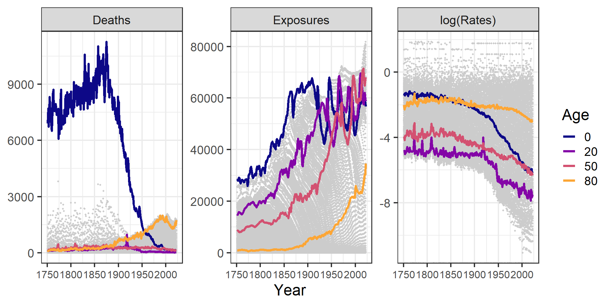
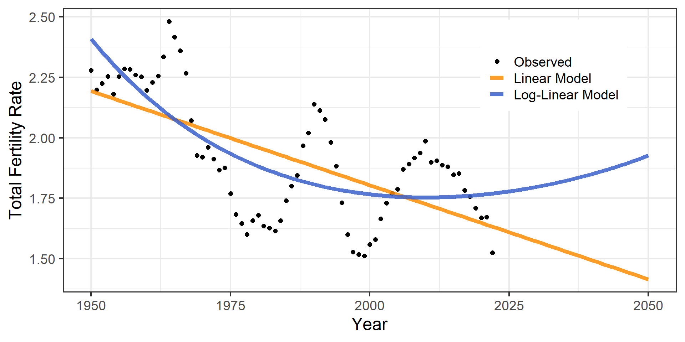

Demographic Forecasting
Lecture 1: Direct extrapolation
by (generalized) linear models
March 4, 2024
Presentations
- A little bit about myself …
- … and a little bit about you
Miscellaneous
- Course materials available on Moodle and at https://github.com/ubasellini/EDSD2024-demographic-forecasting
- Please ask questions during the class or email me at any time (also after this week)
- Lectures consist of theoretical slides and small exercises in
Rto reproduce what we see - On top of demographic forecasting, we will learn how to use animations to make nice dynamic visualizations, and how to use shiny apps
Assignment
- Group assignment, with three students for each group
- Five exercises (out of nine), which will be given after each class
- The exercises follow up on what we have touched during the class
- Please email me a single .pdf file containing your answers, as well as the R codes and data to generate the results. Ideally you can send me an R markdown document
- Deadline: Sunday 7th April
Course overview
- Lecture 1: direct extrapolation by (generalized) linear models
- Lecture 2: direct extrapolation by time-series methods
- Lecture 3: parametric approaches
- Lecture 4: Lee-Carter method
Data
- Let’s start by presenting the data we will use throughout this course
- In general, we will denote by:
- \(x\): age groups
- \(t\): time
- \(y_{x,t}\): response variable (births or deaths) at age \(x\) and time \(t\)
- \(e_{x,t}\): exposures (person-years at risk) at age \(x\) and time \(t\)
- \(f_{x,t} = y_{x,t}/e_{x,t}\): age-specific fertility rates
- \(m_{x,t} = y_{x,t}/e_{x,t}\): age-specific mortality rates
- \(x\): age groups
Fertility
Births, exposures and fertility rates over years 1891–2022 for selected age groups, Swedish females. Source: Human Fertility Database (2024)
Fertility
Age-specific fertility rates (normal and log scale) over ages, Swedish females. Source: Human Fertility Database (2024)
Mortality
Deaths, exposures and log-mortality rates over years 1751–2022 for selected age groups, Swedish males. Source: Human Mortality Database (2024)
Mortality
Age-specific mortality rates (log scale) over ages, Swedish females and males. Source: Human Mortality Database (2024)
Forecasting by direct extrapolation
- One (naive) way of forecasting fertility or mortality is by direct extrapolation
- Approach consists of fitting a model to the time-series of different age-specific measures independently
- First possible model: the linear model
The Linear Model (recap)
\[Y= \beta_{0} + \beta_{1} \,x_{1} + \beta_{2} \,x_{2} + \ldots + \beta_{p} \,x_{p} + \varepsilon\]
Three main assumptions:
- the error term (stochastic part) \(\varepsilon\) follows a normal distribution with expectation value \(0\) and variance \(\sigma^{2}\)
- the \(Y\) is linearly linked with the \(x_{1},\ldots, x_{p}\) (systematic part)
- the variance \(\sigma^{2}\) of \(Y\) and \(\varepsilon\), respectively, does not depend on the covariates \(x_{1},\ldots, x_{p}\)
The Linear Model (recap)
Three assumptions in formulas:
\[ Y \sim \mathcal{N}(\mu(x), \sigma^{2})\] \[\mathbb{E}[Y] = \mu(x,\beta_{k}) = \beta_{0} + \beta_{1} \,x_{1} + \beta_{2} \,x_{2} + \ldots + \beta_{p} \,x_{p}\] \[\varepsilon \sim \mathcal{N}(0, \sigma^{2})\]
Forecasting with the linear model
- Let us consider a vector of observed births (or deaths) \(y_{x,t}\) at age \(x\) and time \(t\).
- Then, one could fit a different linear model to the time-series of the age-specific births (deaths) as: \[y_{x,t} = \beta_{0} + \beta_{1} \,t \] for each age \(x\) independently.
Exercise
Exercise
Open your R session. Load the FertSWE.Rdata dataset, and consider only data from 1950 onward. Further, consider births that occurred at age 20, and fit a linear model to its time series. Extrapolate the time series up to 2050.
Hint: after fitting the linear model with the lm command, create a new dataframe with years up to 2050 and use the command predict(object= . ,newdata = .)
One possible solution
### cleaning the workspace
rm(list=ls())
## loading packages
library(tidyverse)
## loading data
load("data/FertSWE.Rdata")
## subset
my.df <- FERT.SWE %>% filter(Year>=1950, Age == 20)
## fit linear model
lm1 <- lm(Births~Year,data=my.df)
summary(lm1)
## extrapolate
tF <- min(my.df$Year):2050
my.df.fore <- tibble(Year=c(tF))
btF <- predict(object=lm1, newdata=my.df.fore)
## plotting
plot(my.df$Year,my.df$Births,ylim=range(my.df$Births,btF),xlim=range(tF))
lines(tF,btF,col=2,lwd=2); abline(h=0)Dangers of LM
Is the LM an appropriate model?
- Using births or deaths (or even rates) in a LM is not a good idea:
- bounded response variables
- improper statistical framework
- Births and deaths are a count process, therefore a Poisson distribution is much more suitable to model these processes.
When Linear Model can’t be applied
- If we have response made of counts/proportion, linear models (constant variance, normal errors) are not a proper choice:
- the linear model might lead to the prediction of negative counts/proportions
- the variance of the response variable is likely to increase with the mean
- the errors will not be normally distributed
- zeros are difficult to handle in transformations
- We need to relax some of the previous assumptions:
- error term has not to follow any longer a normal distribution
- constant variances are not any longer assumed
- discrete or binary response variables are possible
- \(\Rightarrow\) we have the class of Generalized Linear Models (GLM)
The Linear Model as a GLM
\[\begin{gather*} \mathbb{E}(y_i) = \mu_i\\ \mu_i = \beta_0 + \beta_1 x_{i,1} + \beta_2 x_{i,2} + \ldots + \beta_p x_{i,p} \end{gather*}\]We can see this as a GLM in which:
random component: \(\; Y_{i} \sim \mathcal{N}(\mu_{i}, \sigma^2)\)systematic component: the predictors \(x_1, \ldots, x_p\) produce the linear predictor \(\eta_i = \beta_0 + \sum_{j=1}^p \beta_j x_{i,j}\)link function: a function connecting random and systematic components \(\eta_i = g (\mu_i) = \mu_i\)
Components of GLMs
random component: \(\; y_{i}\) is the realization of a random variable following a specific Exponential Family distribution with mean \(\mu_i\)systematic component: the predictors \(x_1, \ldots, x_p\) produce the linear predictor \(\eta_i = \beta_0 + \sum_{j=1}^p \beta_j x_{i,j}\)link function: it is a monotonic differentiable function connecting the mean and linear predictor \[\eta_i = g (\mu_i) \qquad \mathbb{E}(Y_i) = \mu_i = g^{-1} (\eta_i)\]
The Poisson distribution
A random variable \(Y\) is said to have a Poisson distribution with parameter \(\mu\) if it takes integer values \(y = 0, 1, 2, \ldots\) with probability \[ \Pr[Y = y] = \frac{e^{-y} \mu^{y}}{y!} \qquad \mbox{with} \quad \mu>0 \]
Mean and Variance are equal (heteroscedasticity): \[ \mathbb{E}(Y) = \mathbb{V}ar(Y) = \mu \]
The Log-Linear regression model
\[\begin{gather*} \mathbb{E}(Y_i) = \mu_i\\ \eta_i = \ln \left(\frac{\mu_{i}}{e_i} \right) = \beta_0 + \beta_1 x_{i,1} + \beta_2 x_{i,2} + \ldots + \beta_p x_{i,p} \end{gather*}\]We can see this as a GLM in which:
random component: \(\; Y_{i} \sim \mathcal{P}(\mu_{i})\)systematic component: the predictors \(x_1, \ldots, x_p\) produce the linear predictor \(\eta_i = \beta_0 + \sum_{j=1}^p \beta_j x_{i,j}\)link function: a function connecting random and systematic components \(\eta_i = g (\mu_i) = \ln(\mu_{i} / e_i)\)
Exercise
Exercise
Consider again the subset of data for women aged 20 (starting from year 1950). Fit two models :
- a linear model for fertility rates
- a generalized linear model for births with Poisson distribution and exposures as an offset
In both cases, use time as the only covariate, and produce forecasts up to 2050. Compare the forecasts visually.
Hints:
for the GLM model, use the
glmcommand, specifying both family (Poisson) and offset usingglm(.~.,data=.,offset = log(.),family=poisson())to forecast with the GLM model, use the estimated coefficients
One possible solution
## fit linear model to rates
lm2 <- lm(Rates~Year,data=my.df)
## fit Poisson glm to births
glm1 <- glm(Births~Year,data=my.df,offset = log(Exposures),family=poisson())
summary(glm1)
## linear predictors
fF.LM <- predict(object=lm2, newdata=my.df.fore)
fF.GLM <- exp(coef(glm1)[1]+coef(glm1)[2]*tF)
## plotting
plot(my.df$Year,my.df$Rates,ylim=range(my.df$Rates,fF.LM,fF.GLM),xlim=range(tF))
lines(tF,fF.LM,col=2,lwd=2); abline(h=0)
lines(tF,fF.GLM,col=4,lwd=2)Fertility example
Forecasting with (G)LMs
- Some issues:
- rather bad goodness-of-fit
- very large jump-off bias (error in the last year of the fitting period)
- What about the age-specific shape of fertility?
Fertility example
Fertility example
Forecasting with (G)LMs
- clearly not a very reasonable age-pattern of fertility
- what about the Total Fertility Rate? \[ \mathrm{TFR}_t = \sum_x f_{x,t} \]
Fertility example
Forecasting with (G)LMs
- jump-off bias & “badness-of-fit” really evident
- what about the uncertainty in our forecasts?
GLM: uncertainty
Uncertainty can be derived from variance-covariance matrix \(\boldsymbol{V}\)
Standard errors for:
- \(\hat{\beta}_{k}\): \(\; se(\hat{\beta}_{k}) = \sqrt{ \boldsymbol{V}_{kk}}\)
- linear combination of \(\hat{\boldsymbol{\beta}}\), i.e. \(\, \breve{\boldsymbol{y}} = \breve{\boldsymbol{X}}\hat{\boldsymbol{\beta}}\): \[se(\breve{\boldsymbol{y}}) = \sqrt{ \mathrm{diag}(\breve{\boldsymbol{X}}' \boldsymbol{V} \breve{\boldsymbol{X}})}\]
- a non-linear combination of \(\hat{\boldsymbol{\beta}}\) (delta method), i.e. \(\, \breve{\boldsymbol{y}} = g(\hat{\boldsymbol{\beta}})\): \[ se(\breve{\boldsymbol{y}}) = \sqrt{ \mathrm{diag}(\boldsymbol{G}' \boldsymbol{V} \boldsymbol{G})}\] where \(\boldsymbol{G} = \frac{\partial g(\hat{\boldsymbol{\beta}})}{\partial\boldsymbol{\beta}}\)
Computing CIs for GLMs
## linear combination of betas
X <- cbind(1,tF)
eta.hat <- X%*%coef(glm1)
## var-covar matrix
V <- vcov(glm1)
## computing standard errors
se.eta <- sqrt(diag(X%*%V%*%t(X)))
## upper and lower 95% CI
eta.hat.low <- eta.hat - 2*se.eta
eta.hat.up <- eta.hat + 2*se.eta
## plotting
plot(my.df$Year,my.df$logRates,ylim=range(my.df$logRates,
eta.hat.low,eta.hat.up),xlim=range(tF))
lines(tF,eta.hat,col=2,lwd=2)
lines(tF,eta.hat.low,col=4,lwd=2,lty=2)
lines(tF,eta.hat.up,col=4,lwd=2,lty=2)CIs for one GLM
Forecasting with (G)LMs
- jump-off bias & “badness-of-fit” really evident
- tiny uncertainty for one model
- very hard to incorporate uncertainty coming from \(m\) different models \(\Rightarrow\) would be preferable to work within a single model framework (see Lectures 3 and 4)
Day 1 assignment
Assignment
- Load the mortality data
MORTSWE.Rdata, and focus on male mortality from 1950 onwards for newborns (age 0). Fit and forecast mortality up to 2050 using two separate models:
- a linear model for death rates
- a generalized linear model for deaths, using exposures as an offset
Plot the fitted and forecast rates on a normal and log scale. What difference do you see between the two approaches?
- Load the mortality data
MORTSWE.Rdata, and focus on male mortality from 1950 onwards for those aged 0-100 (i.e. exclude the 101-110+ age groups). Fit and forecast mortality up to 2050 using a generalized linear model for deaths, using exposures as an offset, for all age groups available (aforloop is a convenient way to do so). Compare the observed age-pattern of mortality against the fitted and forecast one. What differences do you observe?

European Doctoral School of Demography 2023/2024 \(\cdot\) INED, Aubervilliers